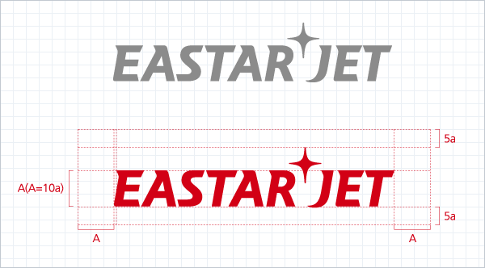
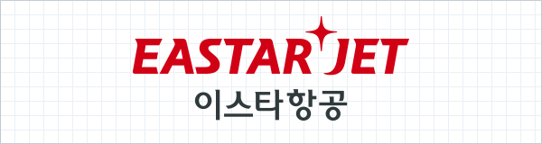

- 회사소개
- CI
전체적으로 이탤릭체를 통하여 빠르고 진취적이며 역동적인 느낌을 전달하는 동시에 각각의 글자는 날카로운 돌출부분으로 시작하면서 중간에 라운드를 부드럽게 감싸는 형상을 통하여 딱딱하고 거친 진취가 아닌 부드럽고 유연한 역동성, 적극성과 지취를 표현하고 있다.
이스타항공의 CI의 효과적인 이미지 형성을 위해서는 다른 외부 요소가 침범하지 않는 최소한의 공간이 확보되어야 한다.

시그니처는 로고마크와 로고타입을 최적의 비례로 조합한 것으로 적용 매체의 특성에 따라 적절한 시그니처 타입을 선택하여 사용한다.

에너지와 강한 힘, 도전과 열정, 진취성과 역동성을 상징하는 빨강색은 또한 별(STAR)과 동양(EAST)을 상징하는 대표색이기도하다. 한·중·일 삼국은 모두 빨강색을 선호하며 행운의 색상으로 여기고 있으며 EASTAR항공은 RED는 중간 빨강보다 약간 진한 CRIMSON RED로서 차별화된 고급세련미를 표현하고 있다.